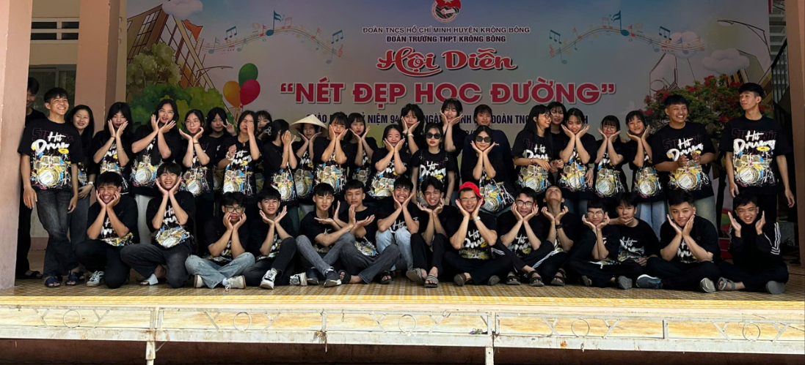
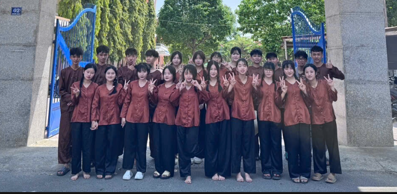
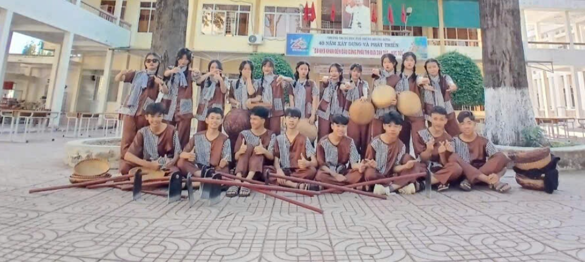

Thanh xuân như một cơn gió nhẹ
Ba năm thanh xuân trôi qua như một cơn gió nhẹ. Từ những ngày đầu bỡ ngỡ bước vào lớp 10 đến khoảnh khắc sắp phải nói lời tạm biệt mái trường thân yêu, tất cả đã trở thành những kỷ niệm không thể nào quên... Những bài giảng, tiếng cười ngoài hành lang, những lần trực nhật muộn, tất cả đều đẹp như một thước phim.
Hình ảnh tập thể 12A5




Những kỷ niệm đáng nhớ
Những ngày kỷ niệm
Những hoạt động của lớp luôn tràn ngập tiếng cười và sự gắn kết. Mỗi khoảnh khắc đều lưu lại những dấu ấn đẹp trong hành trình thanh xuân.
Khoảnh khắc đáng nhớ
Từ những buổi sinh hoạt tập thể đến các dịp đặc biệt, tất cả đã tạo nên một tập thể đoàn kết và đầy yêu thương.
Thanh xuân rực rỡ
Chúng ta đã cùng nhau học tập, vui chơi và trưởng thành. Những kỷ niệm ấy sẽ mãi là một phần không thể thiếu của tuổi trẻ.
Hành trình trưởng thành
Mỗi hoạt động là một bài học, mỗi lần bên nhau là một kỷ niệm. Tất cả đã góp phần làm nên một thời học sinh thật ý nghĩa.